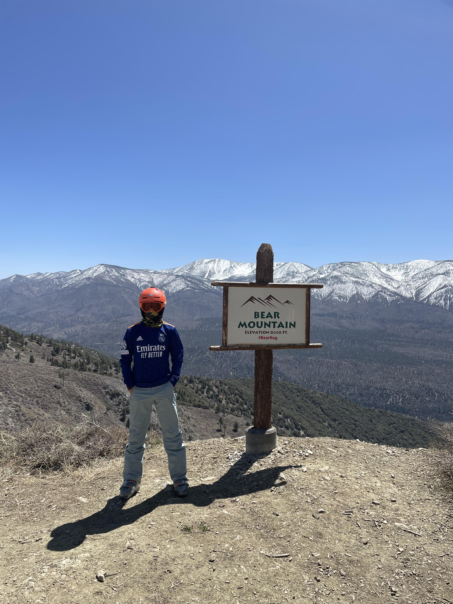

Jose Nieto  Cosas que me gusta hacer Andar en bici Link sobre bici de montaña. Practicar boxLink sobre el box. Futbol Link sobre como jugar futbol. Jugar padelLink sobre padel. Montar a caballo Link sobre montar a caballo.